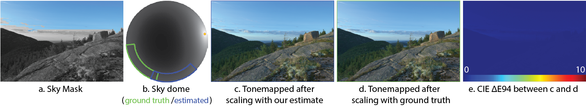

Our algorithm employs sky models to estimate a scaling that can convert images to absolute luminance values. (a) We detect and
segment sky pixels, which are (b) analysed to determine properties of the
sky dome and camera parameters. (c) By scaling the image with our
estimation, we obtain absolute radiometric values, allowing images to be processed by appearance models such as Reinhard et al. 2012. (d)
The same processing was applied to the
image after scaling it with the ground truth scale factor. (e) The CIE ΔE94 differences between (c) and (d) indicate good correspondence between our
estimate and the ground truth.
Abstract
Image calibration requires both linearization of pixel values and scaling so
that values in the image correspond to real-world luminances. In this paper we
focus on the latter and rather than rely on camera characterization, we
calibrate images by analysing their content and metadata, obviating the need for
expensive measuring devices or modeling of lens and camera combinations. Our
analysis correlates sky pixel values to luminances that would be
expected based on geographical metadata. Combined with high dynamic range (HDR)
imaging, which gives us linear pixel data, our algorithm allows us to find
absolute luminance values for each pixel - effectively turning digital cameras
into absolute light meters. To validate our algorithm we have collected and
annotated a calibrated set of HDR images and compared our estimation with
several other approaches, showing that our approach is able to more accurately
recover absolute luminance. We discuss various applications and demonstrate the utility of our method in the
context of calibrated color appearance reproduction and lighting design.
Downloads
Calibrated HDR Images
Our HDR dataset was photographed with a tripod-mounted Nikon D2h
digital SLR camera, which acquires up to 9 images each spaced 1 EV
apart, using autobracketing. The white point was set to a fixed 6700K
(nearest to D65 that this camera supports) and the exposures were
saved in the sRGB color space. Images were assembled into linear HDRs
using Greg Ward's Photosphere application, which we have also used to
derive the response curve of the Nikon D2h. We placed both an 18%
grey card and a GretagMacbeth color checker in each scene for
calibration. To scale the HDR images to absolute values, measurements of Yxy
components of the grey card and several patches from the ColorChecker were taken with a Minolta CS100
color and luminance meter. We also
transformed the images to the D65 white point, as per the sRGB
standard.
————— Images with Clear Skies ——————
————— Images with Overcast Skies ——————
Citation
 |
Yulia Gryaditskaya, Tania Pouli, Erik Reinhard, Hans-Peter Seidel
Sky Based Light Metering for High Dynamic Range Images
Computer Graphics Forum (Proc. Pacific Graphics), 2014
|
@ARTICLE{CGF:Gryad:14,
author = {Gryaditskaya, Yulia and Pouli, Tania and Reinhard, Erik and Seidel,
Hans-Peter},
title = {Sky Based Light Metering for High Dynamic Range Images},
journal = {Computer Graphics Forum (Proc. Pacific Graphics)},
year = {2014},
volume = {33},
pages = {61--69},
number = {7},
address = {Oxford, UK},
booktitle = {22nd Pacific Conference on Computer Graphics and Applications (Pacific
Graphics 2014)},
date = {2014},
doi = {10.1111/cgf.12474},
issn = {1467-8659},
publisher = {Wiley-Blackwell},
url = {http://people.mpi-inf.mpg.de/~jgryadit/Papers/LightMetering/}
}